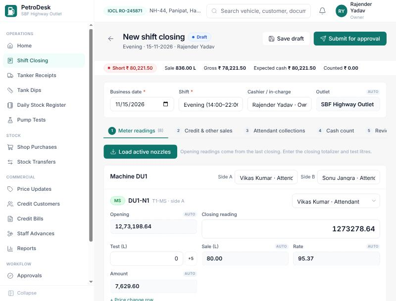
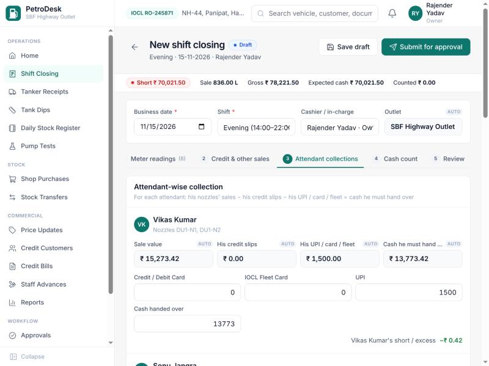
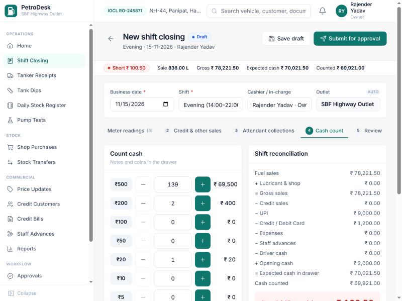
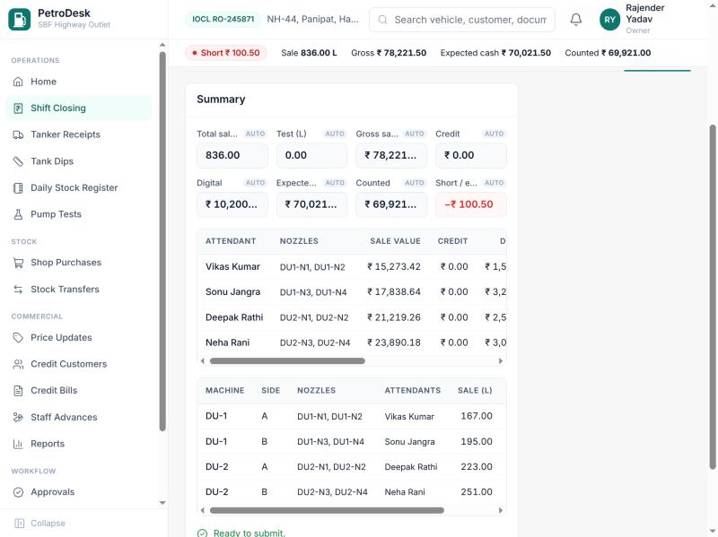
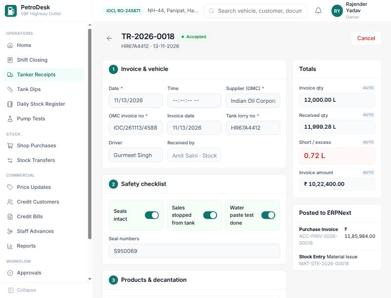
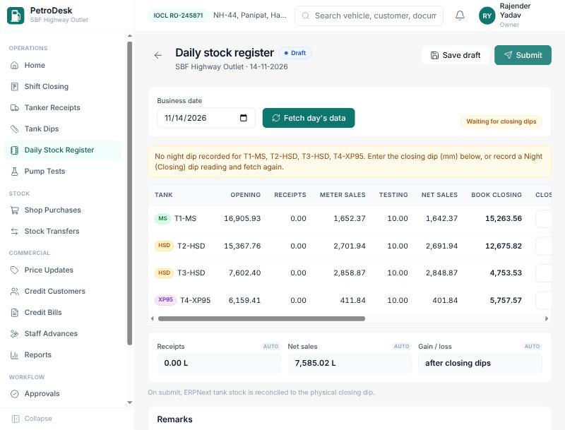
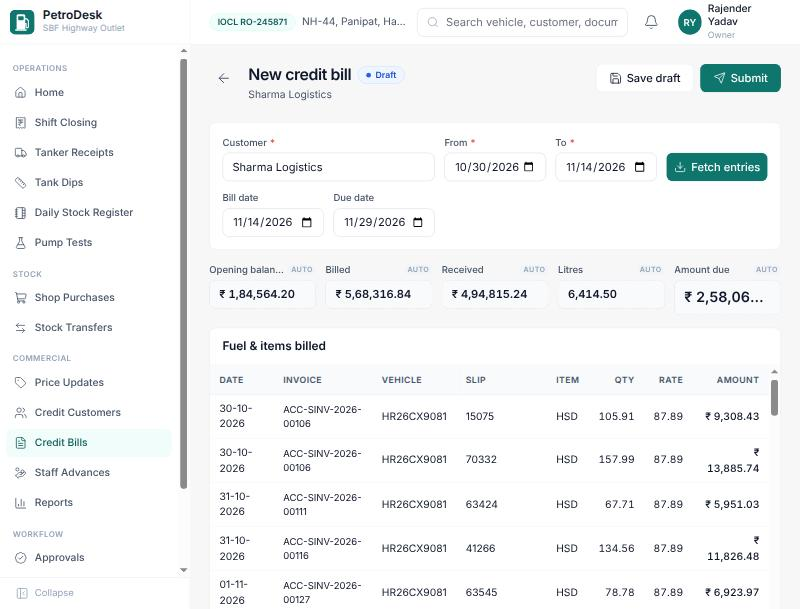
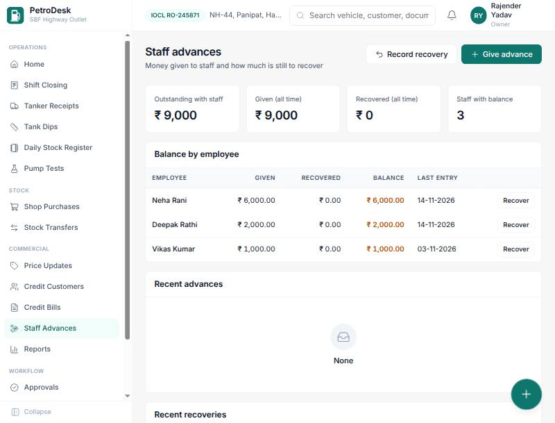

The user guide for running an Indian fuel retail outlet (IOCL / BPCL / HPCL / Nayara / Jio-bp) with PetroDesk and ERPNext: shift closing, attendant cash, tankers, dips, the Daily Stock Register, credit customers and staff advances.
StockTanker decantation, dips, DSR with loss limits
AccountsEvery closing posts invoices & journals to ERPNext
Contents
The pump in PetroDesk: tanks, machines, sides, nozzles, attendants
How the money is checked (the logic, with a worked example)
Who does what (roles) and the daily routine
Closing a shift, step by step
Approving, and what gets posted to ERPNext
Tankers, dips, pump tests and the Daily Stock Register
Credit customers, bills and payments
Staff advances, shop purchases and stock transfers
Prices, reports and the dashboard
Common situations and how to handle them
App: http://petro.localhost:8007/petrodiesel · Back office: http://petro.localhost:8007/desk
1. The pump in PetroDesk
PetroDesk describes your forecourt exactly the way it is built. Read this page first; everything else follows from it.
Term
What it is
In PetroDesk
Tank
Underground tank holding one fuel. Each has a calibration chart (dip in mm → litres).
Fuel Tank Master. One ERPNext warehouse per tank, so stock is tank-wise.
Machine
The dispensing unit (DU / MPD) on the island. Has a W&M stamping date.
Dispensing Unit (DU-1, DU-2…).
Side
A machine usually has two faces, A and B, so two vehicles can fill at once.
The Side on each nozzle.
Nozzle
One hose for one fuel, fed from one tank. Has its own totalizer (cumulative litres meter that never resets).
Fuel Nozzle Master (DU1-N1…). Remembers its last closing reading.
Attendant (DSM)
The person filling vehicles. Takes cash, UPI, cards, fleet cards and credit slips from customers.
Chosen per side (or per nozzle) in each shift.
Cashier
Shift in-charge in the sales room. Collects from attendants, counts the drawer, closes the shift.
Role Pump Cashier.
The one rule to remember. Litres are measured per nozzle (meter readings). Money is checked per attendant (what his nozzles sold vs what he handed over), and then for the whole drawer. Machines and sides are shown for sales and performance; they do not hold money.
2. How the money is checked
A shift closing answers three questions, in this order.
① How much did each nozzle sell? (litres)
Meter litres = Closing reading − Opening reading
Sale litres = Meter litres − Test litres (5 L measure test fuel goes back to the tank)
Sale value = Sale litres × Rate (rate = today's price, or two rows if price changed mid-shift)
The opening reading is filled in automatically from the nozzle's last closing. You type only the closing totalizer and any test litres.
② How much cash must each attendant hand over?
Cash due = Sale value of HIS nozzles
− Credit slips HE filled (fuel given on credit to fleet customers)
− UPI / card / fleet card HE took
Short/Excess = Cash he handed over − Cash due (minus = short, plus = excess)
This is how you know which attendant was short. If one boy runs both sides of a machine, both sides are his. If two boys share a machine (side A and side B), each is checked separately. If a boy moves between machines, all his nozzles add up.
③ Does the cash drawer tally?
Expected cash = Fuel sold for cash (all nozzles − all credit slips)
+ Lubricant / shop sales
− All UPI / card / fleet (attendants' and counter)
− Expenses paid from cash − Staff advances − Cash given to fleet drivers
+ Opening cash left by the previous shift
Short/Excess = Cash counted (by denomination) − Expected cash
When everything is in order, the drawer's short/excess equals the sum of the attendants' short/excess. Lube sales, counter UPI, expenses and advances live only at drawer level.
Worked example — Evening shift, 15-11-2026
Four attendants, two machines, one per side. Numbers are from a real closing in the demo.
Attendant
Nozzles
Sale value
UPI / card
Cash due
Handed
Short / excess
Vikas
DU1-N1, N2 (DU-1 side A)
15,273.42
1,500.00
13,773.42
13,773
−0.42
Sonu
DU1-N3, N4 (DU-1 side B)
17,838.64
3,200.00
14,638.64
14,639
+0.36
Deepak
DU2-N1, N2 (DU-2 side A)
21,219.26
2,500.00
18,719.26
18,619
−100.26
Neha
DU2-N3, N4 (DU-2 side B)
23,890.18
3,000.00
20,890.18
20,890
−0.18
Total
78,221.50
10,200.00
68,021.50
67,921
−100.50
Drawer: expected = 78,221.50 − 10,200 + 2,000 opening cash = 70,021.50. Counted = 67,921 handed + 2,000 opening = 69,921. Drawer short = −100.50, the same as the attendants' total. Deepak is the one to talk to.
Other ways your staff may work — all handled the same way
Situation
What you do in Meter readings
Result
One attendant runs the whole machine
Pick the same person for Side A and Side B.
One card for him with all 4 nozzles.
One attendant per side (as above)
Pick a different person per side.
Each checked separately.
Attendant changes mid-shift
Pick the attendant on each nozzle row; if one nozzle was shared, add a second row for it (like a price change row) and give each row its own attendant.
Each gets exactly the litres he sold.
Relief attendant covers one nozzle
Change the attendant on that nozzle only.
Relief gets his own card.
If the two don't match: something was collected or paid at the counter (lube sale, counter UPI, an expense, an advance) or an attendant's UPI/card was entered under the counter. The difference tells you how much.
3. Who does what, and the daily routine
Pump OwnerEverything: settings, prices, approvals, staff advances, users. Sees all money.Pump ManagerApproves shift closings and tanker receipts, submits the DSR, manages masters, records advances and recoveries.Pump CashierCloses shifts (sends for approval), records credit slips, dips and pump tests, gives advances, makes credit bills.Pump Stock KeeperTanker receipts, dips, pump tests, shop purchases, stock transfers; prepares the DSR. Does not see sales money.
A normal day
06:00Prices — enter the OMC's prices for the day (Price Updates). PetroDesk keeps the history.06:05Morning dip — product dip, water dip, temperature, density at 15°C for every tank.06:15Pump test — 5 L measure on every nozzle; outside ±15 ml the nozzle is put under maintenance.anytimeTanker receipt — seals, density vs challan (±3 kg/m³), dips before/after decantation.14:00Morning shift closing by the cashier → sent for approval.22:00Evening shift closing. Opening cash is carried from the morning shift.06:00Night shift closing (next morning).dailyApprovals — the manager approves closings and tankers; each approval posts to ERPNext.nightNight dip, then the Daily Stock Register: opening + receipts − sales vs the closing dip.weeklyCredit bills to fleet customers, payments received, advance recoveries.
Logging in
Open /petrodiesel in any browser (phone, tablet or PC). Each user sees a home screen and menu for their role. The back office (ERPNext Desk) is at /desk.
Shift Closing → New shift closing. The bar at the top always shows sale litres, gross sales, expected cash, counted cash and the short/excess, updating as you type.
Step 1 — Meter readings
Check date and shift. Tap Load active nozzles: every nozzle appears with its opening reading and today's rate.
For each machine, pick the attendant for Side A and Side B (top right of the machine card). This fills all nozzles of that side. You can still change a single nozzle.
Type the closing reading of every nozzle. Add test litres (+5 button) if a 5 L test was done.
If the price changed during the shift, use + Price change row: the second row starts where the first ended.

Machine DU-1 with side A (Vikas) and side B (Sonu). Opening and rate are filled automatically.
Step 2 — Credit & other sales
Credit slips: customer, vehicle (picking the vehicle fills the customer, fuel, driver and rate), slip number, litres, and Filled by (the attendant). A meter shows the customer's credit limit; over the limit the shift cannot be approved.
Lubricant & shop sales (GST 18% inclusive) and cash paid to fleet drivers (billed to the customer).
Step 3 — Attendant collections
One card per attendant. Enter what each one collected on UPI, card and fleet card, and the cash he handed over. PetroDesk shows his cash due and his short/excess immediately.

Vikas sold ₹15,273.42, took ₹1,500 on UPI, so he owes ₹13,773.42 in cash. He handed ₹13,773 → short ₹0.42.
Below the attendants is Counter collections for UPI/card taken at the cashier's counter (e.g. for lubricants), plus expenses and staff advances paid from cash.
Step 4 — Cash count
Count notes and coins by denomination (− / + buttons). The total is calculated.
Opening cash (left by the previous shift) is filled automatically.
Enter how much you leave for the next shift; the rest is shown as hand to owner / safe.
If the short/excess is above ₹100 (set in Settings), a reason is required.

The reconciliation on the right adds up exactly as in section 2.
Step 5 — Review and submit
The review shows the totals, the attendant table and the machine-wise sales (litres per machine side), plus anything still missing (closing readings, attendants, cash count, reasons). Then:
Save draft — keep working later.
Submit for approval — sends it to the manager. The cashier can no longer edit it.

Review: attendants with their short/excess, and machine-wise sales (DU-1 A/B, DU-2 A/B).
5. Approving, and what reaches ERPNext
The manager opens Approvals (or the shift) and clicks Approve or Reject (with a reason). Rejected closings go back to the cashier, who clicks Revise, corrects and resubmits. Closings within tolerance can be approved in bulk.
On approval PetroDesk creates
Contents
Retail fuel Sales Invoice
Walk-in customer, fuel sold for cash/UPI/card, stock out of each tank's warehouse, VAT included in price.
Lubricant Sales Invoice
Shop items, GST 18% inclusive, stock out of the lube store.
Credit Sales Invoices
One per credit customer, each line with vehicle and slip number.
Settlement Journal Entry
Clears the walk-in invoices against cash (less opening cash), each UPI/card/fleet account, expenses, staff advances, driver cash (to the customer) and the cash short/excess account.
Nozzle meters move forward. Cancelling (manager) reverses everything; later shifts on the same nozzles must be cancelled first.
6. Tankers, dips, pump tests and the DSR
Tanker receipt (decantation)
OMC invoice no, tank lorry no, supplier. Safety checklist: seals intact, sales stopped from that tank, water paste test.
For each compartment: tank, invoice litres, rate (last purchase rate is suggested).
Density: challan density and the observed density corrected to 15°C. Outside ±3 kg/m³ it shows Do not decant; only a manager can accept with remarks.
Dip before and after (mm) and any sales during decantation → received litres and short/excess are calculated from the tank chart.
Send for verification → manager accepts → a Purchase Invoice (invoice litres) and a Stock Entry for the transit shortage are posted.

12,000 L invoiced, 11,999.28 L received → 0.72 L short booked as transit loss.
Tank dip reading
Choose the type (Morning, Night, Shift change, Before/After decantation, Surprise). Enter product dip and water dip in mm; litres come from the calibration chart and are compared with ERPNext book stock. Water in a tank raises a warning.
Pump test (5 litre measure)
Enter the error in ml for each nozzle (+ means the customer got more). Within ±15 ml per 5 L = Pass. A failed nozzle is set Under Maintenance and disappears from shift closing until a manager sets it active again.
Daily Stock Register (DSR)
Book closing = Opening dip stock + Receipts − (Meter sales − Testing)
Gain / Loss = Closing dip stock − Book closing
Within limit = loss is not more than the permissible % of net sales (MS ≈ 0.6 %, HSD ≈ 0.25 %, set per fuel)
Pick the business date and tap Fetch day's data: opening (yesterday's closing), receipts (tankers) and sales (approved shifts) fill in per tank.
Closing stock comes from the Night (Closing) dip. If none was taken, type the closing dip mm in the table. Until then it shows Waiting for closing dips.
The manager submits. ERPNext tank stock is set to the physical dip (a Stock Reconciliation), so the books match the tanks every day.

DSR before the closing dips are entered — no gain/loss is judged yet.
7. Credit customers, bills and payments
Credit Customers lists every fleet customer with outstanding, limit and % used. Open one to see its statement (vehicle and slip-wise, running balance), vehicles, invoices and payments.
Vehicles: add each vehicle with its default fuel and driver; slips then fill automatically.
Receive payment: amount, mode, reference. It is adjusted against the oldest unpaid invoices first.
Credit Bill: choose customer and period, Fetch entries. You get opening balance, everything billed (vehicle, slip, litres, rate), payments received and the amount due — which always equals the customer's ledger. Print it on A4 and send it.

Credit bill for Sharma Logistics, 30-10 to 14-11.
8. Staff advances, shop purchases and stock transfers
Staff advances
An advance can be given from the shift (Collections → Advances to staff, paid from the drawer) or from the office (Staff Advances → Give advance).
Record recovery: Cash return (money comes back, posted at once) or Salary deduction (an HR payroll deduction is created for the chosen month; it is cut when salary is processed).
The balance screen shows given, recovered and due for every employee; click a name for the full ledger. You cannot recover more than is due.

Staff advance balances. Shift advances and office advances are both counted.
Shop purchases
Lubricants and accessories bought from a distributor: supplier, bill no, items, qty, rate. On submit a Purchase Invoice adds the stock to the lube store. (Fuel always comes in through Tanker Receipt.)
Stock transfers
Move shop stock between stores, or fuel tank to tank (same fuel only). Available quantity is checked.
9. Prices, reports and the dashboard
Price Updates: enter today's prices; the old price is shown with the change. Prices are kept as dated history, so every shift uses the right rate.
Collections by mode, expenses by head, price trend, licences and stamping due.
Every report: date shortcuts, sort by any column, filter rows, page through, CSV export and print.
10. Common situations
You see / need
What to do
"Opening reading does not match the last closing"
An earlier shift for that nozzle is still not approved, or a reading was mistyped. Approve shifts in order, or correct the reading.
A nozzle meter was replaced or reset
Setup → Dispensing units → Meter change (old final reading, new start reading) between shifts. The next shift opens from the new meter.
Price changed in the middle of a shift
Add a price change row for each nozzle: first row up to the change at the old rate, second row after it at the new rate.
Attendant short, drawer tallies (or the other way)
Check counter UPI/card, lube sales, expenses and advances — they belong to the drawer, not to an attendant. Make sure each attendant's UPI/card is on his card, not the counter.
Attendant missing in Collections
Pick him on the Side A / Side B selector (or on the nozzle) in Meter readings.
"Credit limit exceeded"
The customer must pay first, or the owner raises the limit in ERPNext (Customer → Credit Limit).
Tanker density outside ±3 kg/m³
Do not decant. Raise a complaint with the OMC. A manager can accept with remarks only if the OMC instructs.
Pump test failed
Nozzle goes Under Maintenance. Call the DU engineer / Legal Metrology. After repair: Setup → Set active.
DSR says "Waiting for closing dips"
Record the Night (Closing) dip and fetch again, or type the closing dip mm in the DSR table.
Recover an advance from salary
Staff Advances → Recover → Salary deduction. The employee needs a salary structure in HR.
Something to change after approval
Manager cancels the document (latest first) and the cashier creates a corrected one.